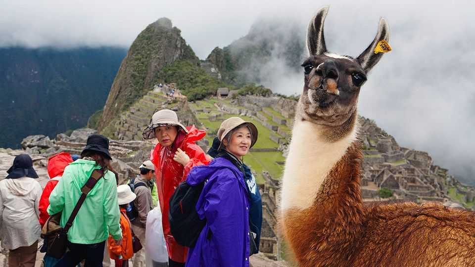

Machu Picchu’s “mafias” are costing Peru real cash
The astonishing Inca site deserves more wrathful management

Nov 12th 2026
Machu Picchu has a reputation for being tough to visit. Head to the Taj Mahal or famous spots on the Great Wall of China, and you can secure tickets a few days ahead. But until recently the ticketing platform for Peru’s famed Inca ruins often showed the site fully booked for nearly six months. Although tourists can queue up for a shot at some of the 1,000 tickets sold daily at the foot of the mountain, many have simply gone elsewhere, says Juan Stoessel of Casa Andina, a hotel chain. “We constantly got calls from guests cancelling their reservations because they realised they couldn’t secure tickets.”
The monument’s fame is not the sole cause of this logjam, according to an audit by the Peruvian comptroller’s office. It concluded that between August 2024 and December 2025 tourism agencies exploited weaknesses in the official ticketing website to make more than 200,000 reservations. Most were for tickets that they never ultimately bought.
The government report did not speculate about the agencies’ motives, but many Peruvians see the workings of a “mafia”. Tourists who are blocked from buying tickets are more likely to fork out for access secured by third parties who are working in cahoots with corrupt officials, says Maycol Ugarte, who represents the national government in the district where the site lies. “They’re tarnishing the image of Machu Picchu.” Some tourists, he says, end up paying $300 for entry, more than five times what it should cost.
This is frustratingly familiar. In 2023 some 70,000 people were believed to have got into Machu Picchu in irregular ways. Back then, the government vowed to outsource the job of ticketing to a company that it thought would do better. But that sparked angry protests from people claiming to be outraged by the “systematic privatisation of Machu Picchu”. Demonstrators blocked train services that haul tourists to the ruins. Eventually the government took back control.
Authorities have unveiled a new website that they insist is harder to hack. But there appears to be little appetite to bring the wider problem of corruption at Machu Picchu to heel. The only person known to have been charged recently with selling access to the monument is a security guard handed a five-year jail term for taking a bribe of 100 soles ($29) to sneak someone in. Mr Ugarte wants a criminal probe that would see ringleaders properly prosecuted. In the meantime, he thinks bureaucrats who oversee Machu Picchu’s ticket sales should be rotated to different jobs every few months.
Machu Picchu has long been the crown jewel of Peruvian tourism. Once a getaway for Inca royalty, the site today attracts some 1.5m visitors a year. This pumps millions of dollars into an under-developed region that is home to a lot of indigenous Peruvians. But annual visits remain just short of their pre-pandemic peak. Some think the ticketing troubles are partly to blame. Protesters with various grievances who are more often choosing to block the site as a way of gaining attention have also taken a toll. “It’s shameful,” says Mr Stoessel. “The big loser is Peru.” ■